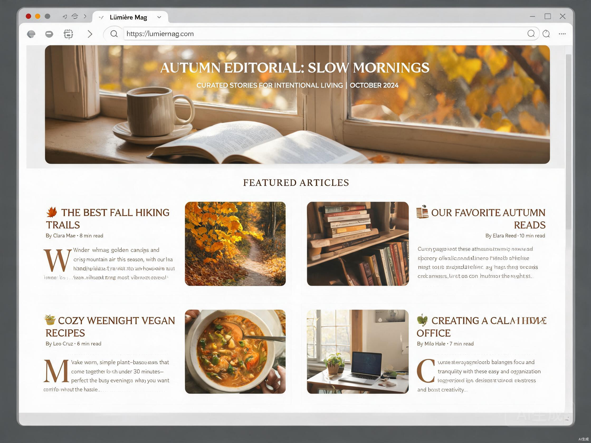
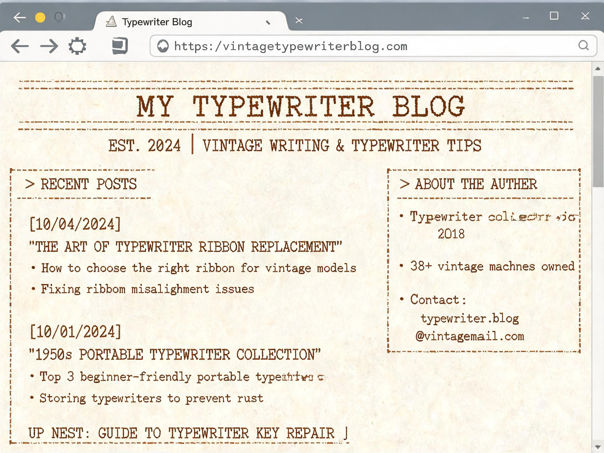
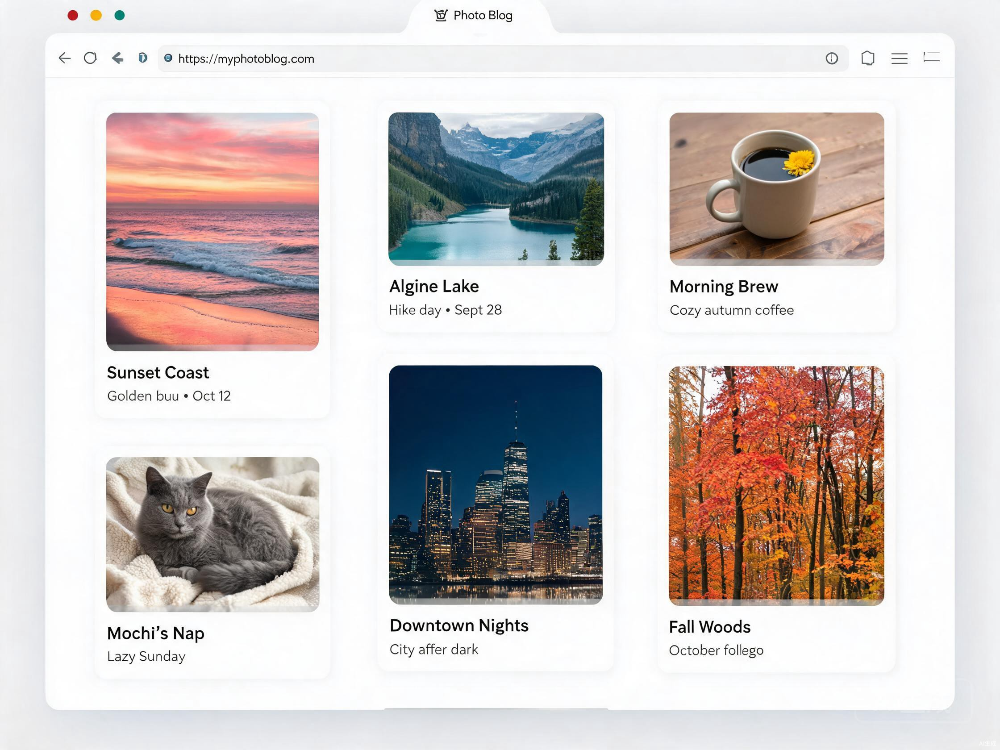
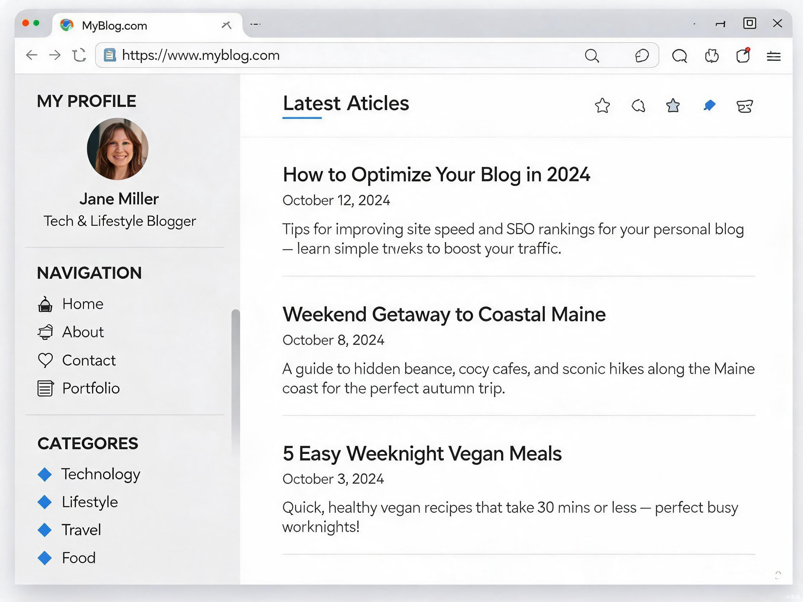
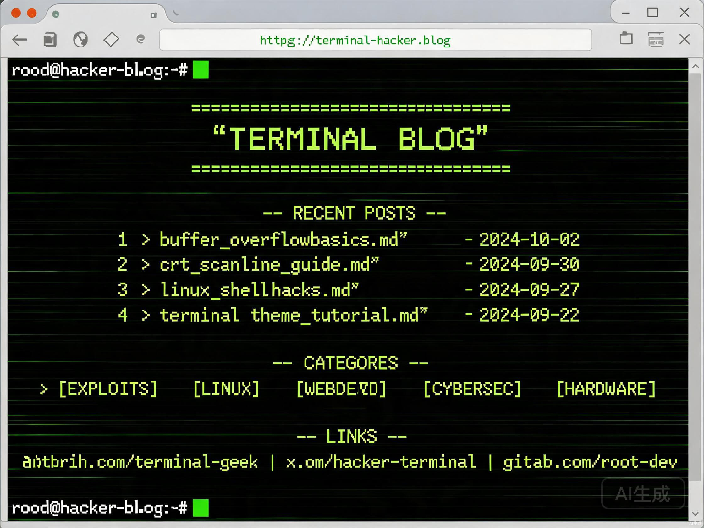
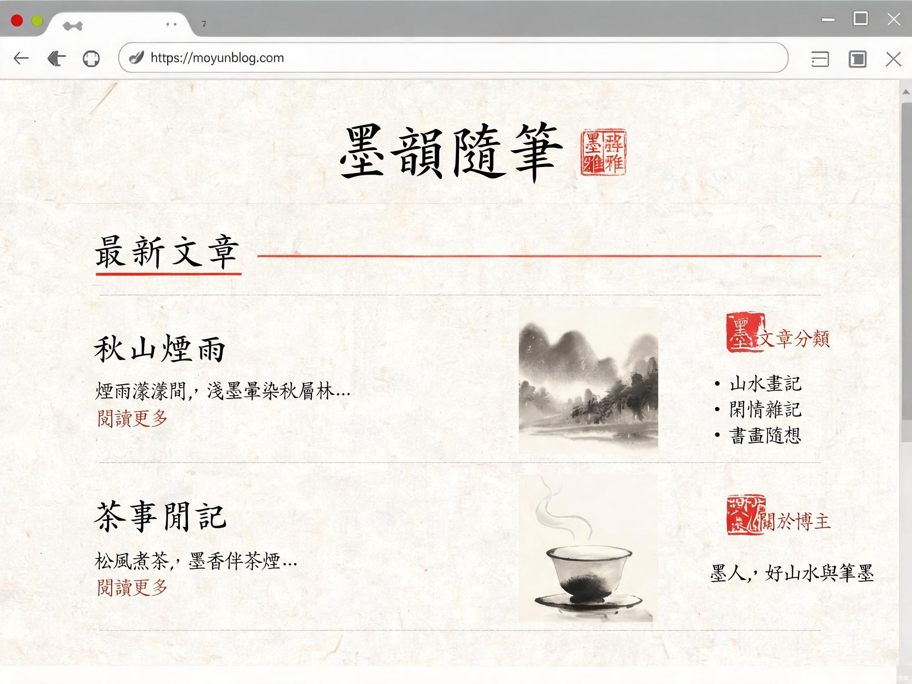

每一款都为三端精心适配，在 App 内即时预览配置，无需重新部署。从杂志排版到水墨意境，找到契合你的表达。
✨以下主题已内置在 App 中，展示的 Preview 预览图均为 AI 渲染 😚

大图封面、网格布局、衬线标题、首字下沉。借鉴印刷杂志的版式语言，适合图文并茂的长篇专栏。

米色纸张、打字机字体、虚线边框、光标闪烁。还原老式打字机的质感与节奏，让字符带着时光的温度。

Pinterest 风格瀑布流、图片为主、CSS columns 实现。不规则高度的卡片排列，适合摄影与视觉类博客。

固定侧边栏、主内容区、桌面双栏手机堆叠。经典博客布局，结构清晰，适合长期更新的技术博客。

黑底绿字、等宽字体、CRT 扫描线、命令行提示符。致敬命令行美学，极客与开发者专属的数字风格。

宣纸纹理、楷书标题、朱砂红强调、竖排装饰、印章标签。东方水墨意境，适合诗文随笔与文人气质的书写。